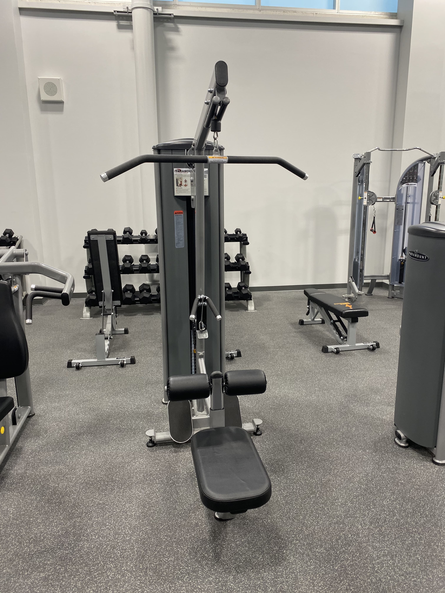

Ignite Fitness
Lat Pulldown Machine

Safety Tips
- Warm up for 5-10 minutes
- Start at a comfortable weight and progressively increase the weight
- Adjust the thigh pad to rest on top of your thighs so it holds you in place
Recommended Uses:
Lat Pulldown

- Sit on the machine with your thighs under the thigh pads and your feet against the foot pads
- Make sure your torso stays in an upright position and squeeze your abdominal muscles throughout the
exercise
- Grab the middles of the slanted sections of the bar with an overhead grip. Make sure your knuckles face
up
- Pull down the bar until it is level with your chin and exhale as you do so. Squeeze your shoulder blades
and hold for a moment
- Slowly allow the bar to raise back to the top of the machine
- Repeat steps 3-5 for 8 to 12 reps, then rest
Low Row

- Sit on the machine with your thighs under the thigh pads and your feet against the foot pads
- Make sure your torso stays in an upright position and squeeze your abdominal muscles throughout the
exercise
- Grab the row handle with an underhand grip
- Keeping your elbows in front of your chest, bring them back
- Hold the position for a moment while squeezing your back muscles, then slowly return to the starting
position
- Repeat steps 4 and 5 for your desired number of repetitions